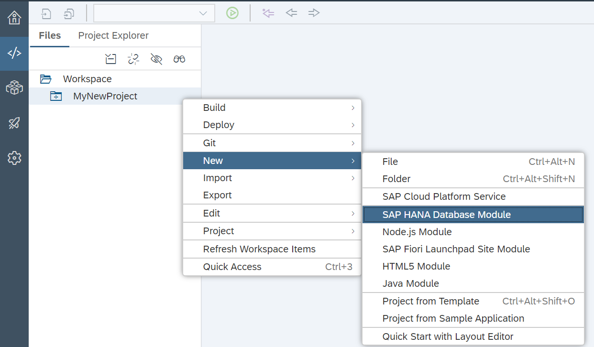

Prerequisites:
To deploy a GeneXus Application to SAP Cloud Foundry, follow the steps described below:
Cloud Foundry Configuration
SAP Cloud Platform (Neo) Configuration
Data Store Configuration
Application Deployment
Cloud Foundry Configuration
Log into SAP Cloud Foundry Trial (if you do not have an account, you have to create one). Once there, select trial:

Then, select the dev Space as shown below:

In the left menu, select Services > Service Marketplace. Then, search for Hana using the search box, and select SAP HANA Schemas & HDI Containers:
The next step is to create a new instance of the service. So, select Instances and press the New Instance button:
A Popup Wizard will be opened. In the first step, select the "hdi-shared" value for the Plan combo box and click on the Next button:

In the next step, you can specify parameters for the schema. You have to configure the schema name using a JSON:

Note: myschema is an example name. You can choose the name that you prefer for your schema.
The next step is to bind the container to an application you already have on the cloud. Leave it set to (None):

In the last step, you can choose the Instance Name:

Click on Finish to create the instance.
Notes:
You can create the HDI instance from the command line using the command cf create-service hanatrial hdi-shared myHANAdb.
SAP Cloud Platform (Neo) Configuration
To be able to use the HDI instance to store data you have just created, you need to access the Neo Environment of your Cloud Platform Account. After logging in, you have to select in Home: <Your Region> - Cloud Foundry - Trial. This will take you to this next page:
Scroll down the page until you find the Access Neo Trial option:

Select Access Neo Trial. This will send you to the Neo Environment Cockpit.
The first step here is to enable “Principal Propagation.” To do so, in the left menu select Security > Trust. Next, click on the Edit button, change the value of the Principal Propagation field to Enabled, and Save:

This will allow the Web IDE of Neo to communicate with Cloud Foundry.
Next, you have to enable the Web IDE Full-Stack tool. To achieve this, in the left menu select Services > SAP Web IDE Full-Stack, enable it, and select Go to Service.
Once the Web IDE is open, you may be prompted to connect to Cloud Foundry. Otherwise, you can set it up by going to Preferences > Workspace Preferences > Cloud Foundry and by setting it up with the correct endpoint. This will vary according to what Region your Cloud Foundry is.
After this setup, go to the Home Page, select New Project from Template > (Environment=Cloud Foundry) Multi-Target Application, enter a name (the name is not relevant for the deployment), and select Finish.
This should take you to the Development screen:

Once here, right-click on <Your Application Name> and select New > SAP HANA Database Module:

A wizard will be opened. Enter a Name (the name that you prefer), then press Next and Finish:

The next step is to enable the Database Explorer in order to manage the HDI Container. To do so, go to Preferences > Extensions and search for "Database Explorer." Turn SAP HANA Database Explorer on.

Then, go to the Database Explorer and select the plus symbol:
It will open a prompt in which you have to select the HDI Instance you had created. To do so, select Database Type = HDI Container. All the HDI instances you have will be shown. Select the one you will use to deploy your app and click OK.
This will connect the Web IDE with the HDI Container allowing you to execute SQL Queries.
Note: You have to use a HANA Data Store and it is only tested on a Java Environment.
Before Setting up the datastore you need to access once more the SAP Cloud Foundry, go to Services, Instances, and select the HDI Service Instance you Created.
Select Services Keys and select the one with the following format <yourEmailOrUserName>+Numbers (Ex. jdoe@testing.com:A7@4231235344575685), and keep the JSON from the service key saved because you are going to need it through the configuration of the Data Store in GeneXus.
To be able to use the HDI container, you need to configure the Data Store. To achieve this, go to the Knowledge Base Preferences and select the Environment you want to deploy. Then, select the desired Data Store, and set the following properties with the values you have on the JSON you retrieved from the HDI container Key:
Use Custom JDBC URL = True
Use Custom JDBC URL = JSON URL field
Server Name = JSON host field
User Id = JSON user field
Password = JSON password field
Database Schema = JSON schema field
You should have something like this:
This will allow you to work on your application using the Cloud Foundry Container directly even if you are still developing on your PC and have not deployed yet to SAP Cloud Foundry.
After executing all the queries, you are ready to deploy the application to SAP Cloud Foundry.
Application Deployment
To deploy the application, go to Build > Deploy Application and select the objects you want to deploy. Select SAP Cloud Platform (Cloud Foundry) as Target.
Then you need to set up the following Deploy Properties:
Cloud Foundry CLI Directory = the directory where you have installed the Cloud Foundry client (e.g.: C:\Program Files\Cloud Foundry)
API Endpoint = endpoint where your Cloud Foundry account is located.
Organization Name = organization name of your Cloud Foundry account (e.g.: p123456789trial).
Space Name = space name of the Cloud Foundry (e.g.: dev).
User = user account used to log into the SAP Cloud Foundry.
Password = user's password.
HANA Instance Name = name of the service created (e.g.: myHANAdb).
Application Name = name you want to give to the application.
In the routes field, it will show you where the app has been deployed and you can access it by adding /servlet/com.<Knowledge Base name>.<object you want to access>
(e.g.: https://deploycf-wacky-klipspringer.cfapps.eu10.hana.ondemand.com/servlet/com.deploycf.fioribaseobjects.fiorilaunchpad)
This applies from GeneXus 16 upgrade 10 onwards for Java Environments.
|